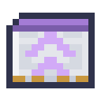

Programs
One language runs on everything that can carry a program: an agent, which goes to what it works on, and a Port, which reaches it from where it stands. No model is asked. A program does exactly what it says, as often as every tick, and how hard it can work is up to its upgrades.
The Palette beside every program lays all of this out to click together, page by page. Each piece says what it does when you point at it, so nothing here has to be typed, or remembered.
A Port's programs on its screen, part by part.
Steps
Steps go between commas. A step can take a number, a thing, and words that say where:
send 64 iron ingot from front to networkdig stone at box(front, mark(2))use shears at entities(4, sheep)fling 8 cobblestone at up speed 1 pitch 45
Going: go, come, home, stay, follow, forward 3, back, up, down, turn left, and teleport to a
place the relays cover.
Carrying: send items, pump fluid and charge energy, each from one place to another, or to each of a list in
turn, as many at a time as its upgrades allow. pump lifts a source block out of the world and sets one down again, and
a network keeps fluid as it keeps items: pump from front to network.
pickup takes what lies around, and pickup xp turns experience into bottles. drop, fling, void items and drain fluid get rid of
them. take, put, give and fetch go through the stores around home.
The world: dig and place at any area. use is a right click, with what it holds, on a block or a creature; add
sneak to crouch. attack strikes with what it holds. extrude 8 stone at up lays a line of blocks, one at a time, and
retract 8 at up takes it back. emit 15 gives out a redstone signal, and pulse 15 for 5 gives one for five ticks. sign
writes on a sign. harvest, plant and till work a field; mine looks for a block and digs to it.
Hands: select a slot, transfer to another, equip a tool, refuel on what burns, lift a creature and lower it.
Logistics: craft 8 torch makes them there and then from what it holds, and has its network make what it cannot.
supply goes after what a job lacks. On a team's board, provide offers what a place holds, push wants it gone,
accept takes what is pushed and request 16 iron ingot wants that many kept there; deliver makes one trip between
them. Two Ports and a carrier make a base that passes things along by itself.
Saying: wait, say, note (for whoever reads the program), sound, particle, rename, run at front (what a Program
Card there says), retire (it goes back to being an item).
Where
front, back, left, right, up and down are its own sides, and here and home where they say. A number is a mark from
the Survey Rod, which also works on Ports: sneak-use the rod on one to hand it the marks. pos(1, 64, 3)
is a place, offset(here, north, 3) one worked out, pos(1, 64, 3, the_nether) one in another dimension, which only the relays reach. network is its storage network, hands
what it holds, and owner whoever set it down, wherever they are: section(armor), section(offhand) or section(ender) for
one part of what they carry.
Values
A value is a number, "text", true or false, a thing, a fluid, a place, an area, a creature, or a list of any of those.
$xis the program's own, and goes with it.@xis the body's, and stays when its program changes. Another reads it withread_var(front, "x").#xis a channel, the same for everything on a team, and kept with the world.
set $n count(front, coal) * 2 works one out. Numbers take + - * / %, anything compares with = != < <= > >=, and checks
join with and, or and not. Among a function's values, plain words name things: count(front, iron ingot). In the words of
a say or a sign, $x is what it holds.
Lists are written [1, 2, 3] and joined with +. What works through one reads each thing as $it:
map($list, $it * 2), filter(items(front), food($it) > 3), sum, sort, first, count, any, all, and reduce, which
keeps $acc between them.
Going round
if … (…) else (…), repeat (…), repeat 3 (…), repeat count($list) (…), while … (…), until … (…), for each $x in … (…),
over a list or an area, and wait until …. next goes on to the next round, leave out of the round, stop ends the program.
The first checks still read without parentheses: have 3 bread, ripe, full.
to row $n $what (repeat $n (place $what at front)) makes a step of your own, written anywhere in the program; row 3 cobblestone
runs it. A parameter is its own, return 2 ends it and leaves that in $result, and it can call itself, 64 deep.
Events
A handler waits beside the program and cuts in when something happens:
on redstone at 1 (…), when a place gets a signalon item coal at front (…), when a thing arriveson block at 1 (…), when a block changeson timer 5 (…), every five secondson change #needed (…), when a value changeswhen count(front) > 16 (…), when something comes true
What it cut short goes on afterwards, a wait with the time it had left. Add priority 5 to say what matters most: a handler
cuts in only on what has a lower priority, and otherwise waits its turn. The program itself is 0, and a handler 1 unless it says.
Areas
Wherever a step says at, from or to, an area works too, and it works through it a little at a time. An area is at most
250,000 blocks.
| Shape | What it holds |
|---|---|
box(a, b) | every block between two corners; hollow its faces, frame its edges |
cylinder(a, b, filled, y) | a circle round a, as wide as b is from it, run out along an axis; tube, hollow |
grid(a, b, 3) | every third block between two corners |
line(a, b) | what a straight line passes through |
pyramid(a, b, y) | its point at a, its base at b; hollow |
random(a, b, 10) | ten places between two corners |
sphere(a, b) | round a, as far as b; hollow |
torus(a, b, y) | a ring round a; hollow |
wall(a, b, y) | the line between two corners, run out along an axis |
+ adds areas and - takes one from another: dig at sphere(1, 2) - box(3, 4). near(8) is a box as far as eight blocks round it.
Filters
What a step works on can be named many ways, and the same words serve for items, fluids and creatures:
iron ingot,coal or cobblestone,except oak log: a white list and a black listtag(logs),mod(minecraft),regex("_ore$")where durability($it) < 50: anything the language can read about it, such asdamage,fluid_fill,energy_fill,enchantedorfoodghosts(): what a Port's nine filter slots showitems(1): what a chest holds, so a chest of samples is a filter with as many kinds as it has slotspump water,attack at entities(8, zombie),entities(8, mob),entities(8, tag(raiders)), andentities(8, other_than(player)), a black list wherever a filter goeskind(food): what a filter model says. It takes a checkpoint or a tuned Relay Card that passes Sorting (Models and Tests), in an agent's Filter slot or a Port's filter model slot. It asks about each thing once, by name; whatever it is not sure of, or anything with no model there at all, iskind(other).
Reading the world
Functions read whatever a body can reach, in the same words as everything else, listed on the palette's Senses page:
- Inventories, tanks, energy:
count,items,slots,slots_used,fill,fluid_amount,fluids,tanks,energy,energy_capacity - Blocks:
block,has_block,property(block(front), lit),biome,light,compare,detect,block_data - Redstone:
signal,redstone,comparator,clock(5) - Creatures:
entities,players,health,held,armor,is_baby,can_breed,target,carrying - Machines:
working,has_work,progress,temperature,recipes(front),recipe_output(raw iron, front) - The world:
is_day,is_rain,time,tps,world_name,player_count, andheard(harp), the note a note block played nearby - Networks:
is_network,network_items,network_count(iron ingot),network_fluids,network_fluid_count(water),network_ports,craftable,jobs,network_lacks,power_stored,power_drawn - Itself:
fuel,reach,run_items,selected,slot_item,equipped,upgrades(speed)
On a Port
Programs, on a Port's screen, opens what it runs. Its top row takes up to nine Program Cards, each with a program of its own, all running at once and sharing the slots beneath them, its upgrades, its tank and its battery. Click a card to see it, write in the box and press Run. With a written card in it, a Port does what its cards say instead of what its mode says.
What it works on need not touch it. It reaches 8 blocks, and further with Range upgrades; network is the storage network its
back is linked to.
Upgrades
A body works in operations: one transfer of items, fluid or energy, or one block dug or placed. With nothing in its side panel an operation takes 8 ticks, and moves 8 items, 250 mB or 1,000 FE, 8 blocks away at most. Upgrades go in that panel, one kind to a slot, on a Port or an agent.
| Upgrade | Each one | At most | Then |
|---|---|---|---|
| Speed Upgrade | halves the ticks | 3 | an operation every tick |
| Stack Upgrade | doubles the items | 3 | 64, or 1,280 items a second for each program |
| Range Upgrade | adds 8 blocks | 5 | 48 blocks |
| Fluid Upgrade | doubles the fluid, and adds 16,000 mB of tank | 4 | 4,000 mB, or 80,000 mB a second |
| Energy Upgrade | quadruples the energy, and adds 800,000 FE of battery | 4 | 256,000 FE |
| Carrying Upgrade | gives an agent 6 more slots | 6 | 48 slots |
| Lift Upgrade | lets an agent fly | 1 | 10 FE a tick in the air |
The Fabricator makes Speed, Stack, Range, Fluid and Carrying upgrades from an attention photomask, and Energy and Lift upgrades from a transformer photomask.



A Relay Card tuned to a Model Server goes among the upgrades, and then a body reaches anywhere the server's relays
cover, for 100 FE an operation; teleport jumps there for 10,000 FE. A body with an Energy upgrade takes energy in with
charge from front to hands, from a cell or anything else that holds it, or refuel burns what it holds: 64,000 FE from a piece of coal.
Watching it work
The step a body is on floats over it, in the words of its program, when you are within 16 blocks and looking its way. Teal is a step under way, grey a wait, amber a program held in the debugger. A Port running several programs shows the first that is working, and how many more it has. Only the few nearest the middle of your view float, never one over another, so in a row of Ports you read the ones you look at, and the lit sides of the rest say they are working too. F1 hides them.
The debugger
Beside a program's Trace sits its debugger: every step on a line, with the one under way lit. Pause holds it at its next step,
and One step runs one and holds again. Click a line to stop there every time it comes round, or write breakpoint in
the program. Below, Values shows what its variables hold, and whatever you write under Watch, count(front) for one, is worked
out again as it runs.
What holds a program back
A program takes at most 32 steps a tick and goes on with the rest in the next, so a loop with nothing in it cannot hold up the world, and a sum that goes on too long fails. A step that fails says why in the trace, and the program goes on with the next. Stop always stops it.
Who may use it
A Port or an agent belongs to whoever set it down. The lock beside its screen says who else may open it and change it: anyone, its
owner's team, or only its owner. /residual team make NAME makes a team, /residual team invite PLAYER asks someone in, and
/residual team join NAME and /residual team leave do what they say. A team shares its channels and its logistics board.